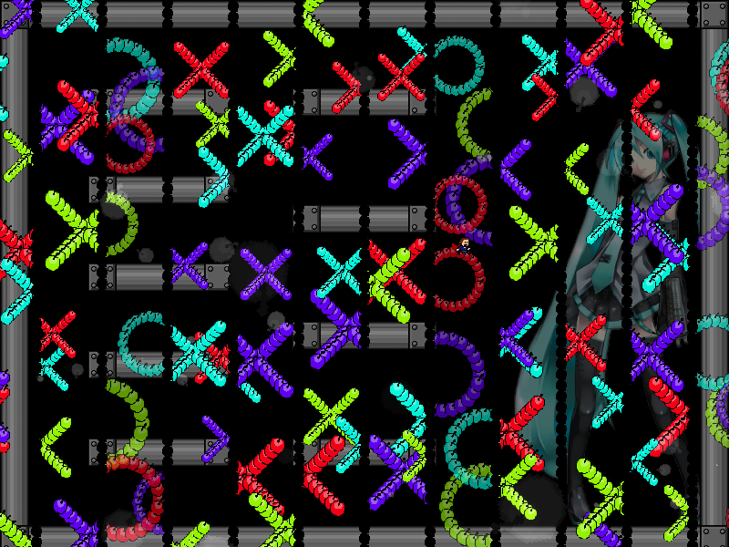
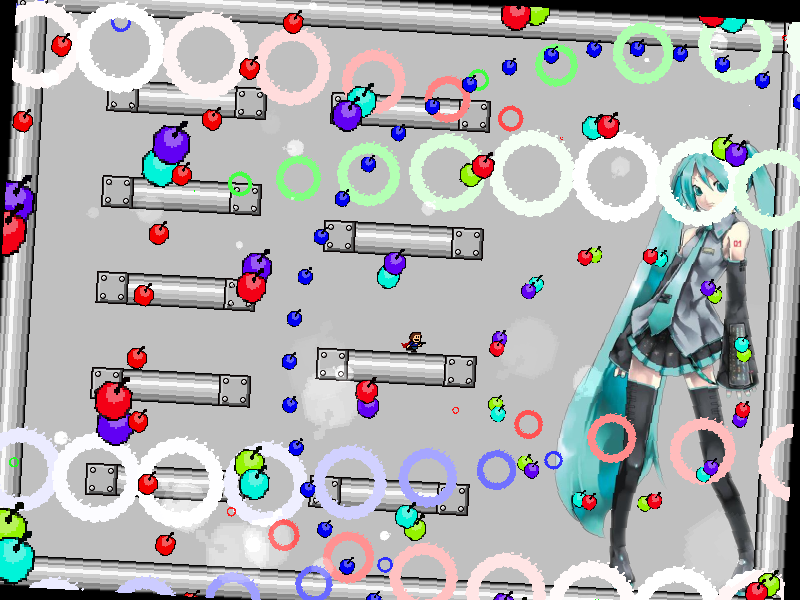
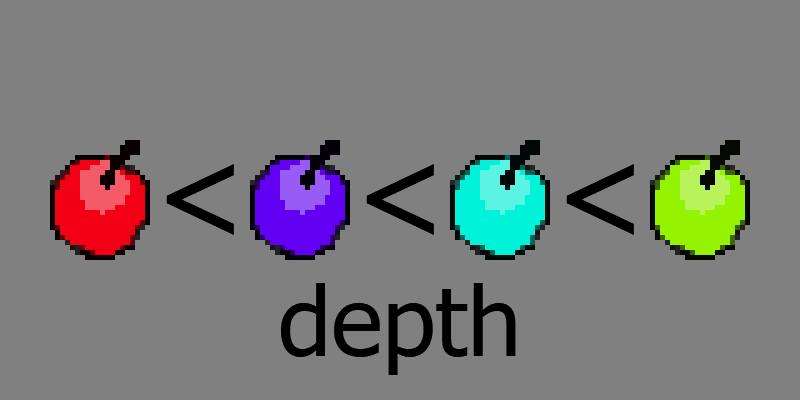
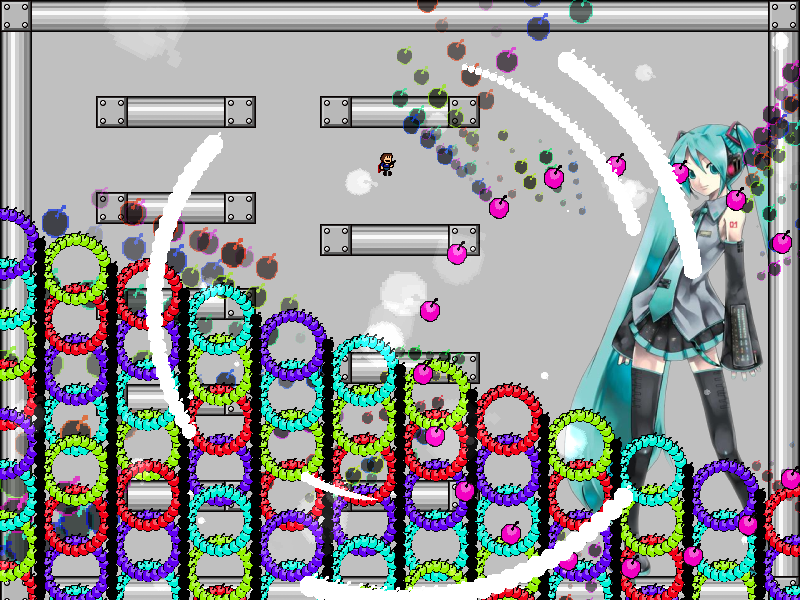
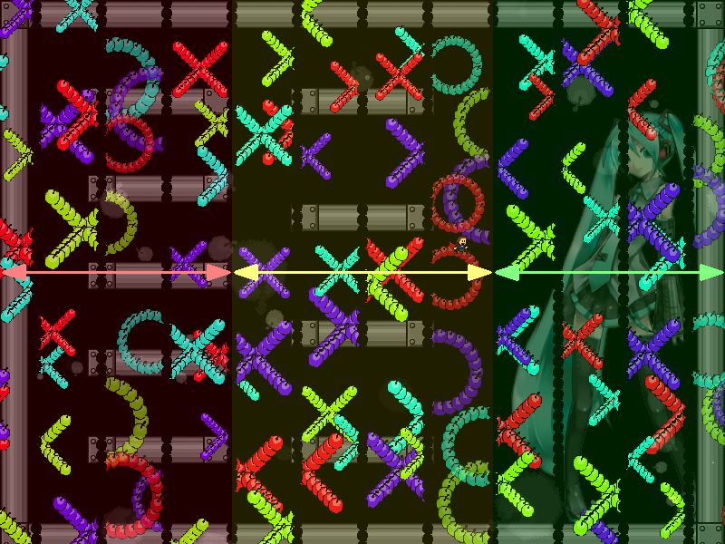

chapter4 - section6

| creator | segment | label | jump |
|---|---|---|---|
| NN | 0:49.50~0:50.90 | P*A*S | double |
4-4~4-5の解答に対応する、弾の重なり方（depth）を題材とした択一型の弾幕です。
4-4において弾の色と重なり方の関係を見極め、4-5においてその関係が正しく反映されている列を判断することを目的としています。
4-4における初音ミク右手部を中心として回転する同心円状弾幕（fig.4-6.1）を構成する弾に関して、これらは色によってそれぞれ異なるdepth（重なり方を決定するパラメータ、値が小さい程手前に描画される）の値が割り当てられています。
2つずつの弾で構成されている部分を見ることによって、特定の2色に関する弾の重なり方（depthの大小関係）を確認することができます。

2色の比較を複数回行うことによって、系全体における弾の色とdepthの関係を把握することができます。
fig.4-6.1に示す状況について、具体的な色とdepthの関係がfig.4-6.2に示すようになっていることが確認できます。

0:48.10~0:49.10において整列する円形弾幕関して（fig.4-6.3.a）、4-4における色とdepthの関係が正しく反映されている列が正解の列となります（fig.4-6.3.b）。


なお、0:49.10の時点で整列した状態において、それぞれの列について最も上部に位置する（y座標が小さい）円形弾幕がその列における最も小さいdepthに対応する色をもっています。
したがって、4-4において最も小さいdepthに対応する色のみを判断することによって正解の列が確定できるということを利用することで攻略がしやすくなるかもしれません。
また、正解の列は左から1~4列目、5~8列目、9~12列目にそれぞれ1列ずつ存在します（fig.4-6.4）。
